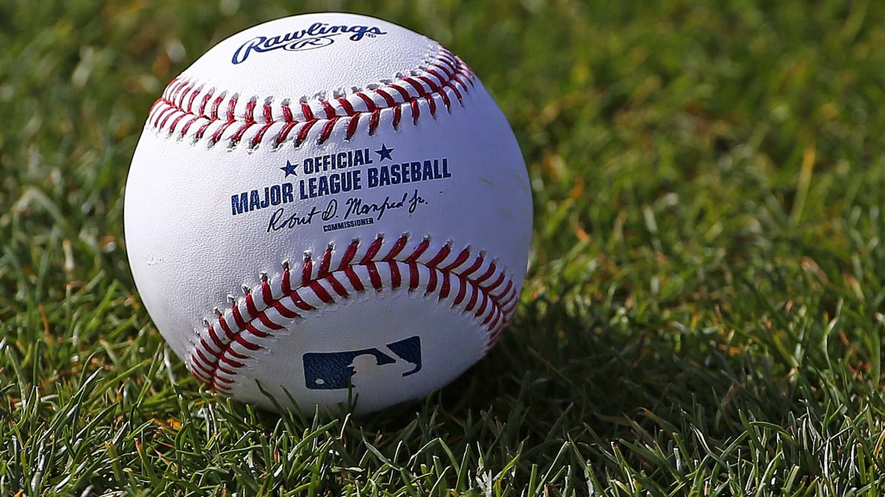

What is Babip?
Batting Average on Balls In Play (BABIP) measures how often a ball in play goes for a hit. A ball is “in play” when the plate appearance ends in something other than a strikeout, walk, hit batter, catcher's interference, sacrifice bunt, or home run. In other words, the batter put the ball in play and it didn't clear the outfield fence. Typically around 30% of all balls in play fall for hits, but there are several variables that can affect BABIP rates for individual players, such as defense, luck, and talent level.
Why is Babip important?
For hitters, we use BABIP as a sanity test of sorts that tells us if their overall batting line is sustainable or not. Virtually no hitter is capable of producing a BABIP of .380 or higher on a regular basis and anything in the .230 range is also very atypical for a major league hitter. In other words, BABIP allows us to see if a hitter seems to be getting a boost from poor defense or good luck or getting docked for facing good defenses and having bad luck.
2024 NL(National League) BABIP Leaders (As of 9/26/2024)
1. CHC RF Seiya Suzuki: .368 BABIP
2. ATL DH Marcell Ozuna: .368 BABIP
3. CIN SS Elly De La Cruz: .361 BABIP
4. PIT SS/CF Oneil Cruz: .350 BABIP
5. COL SS Ezequiel Tovar: .344 BABIP
2024 AL(American League) BABIP Leaders as of (9/26/2024)
1. OAK DH/LF Brent Rooker: .368 BABIP
2. NYY CF Aaron Judge: .367 BABIP
3. KCR SS Bobby Witt Jr.: .354 BABIP
4. BOS CF Jarren Duran: .346 BABIP
5. SEA CF Julio Rodríguez: .345 BABIP